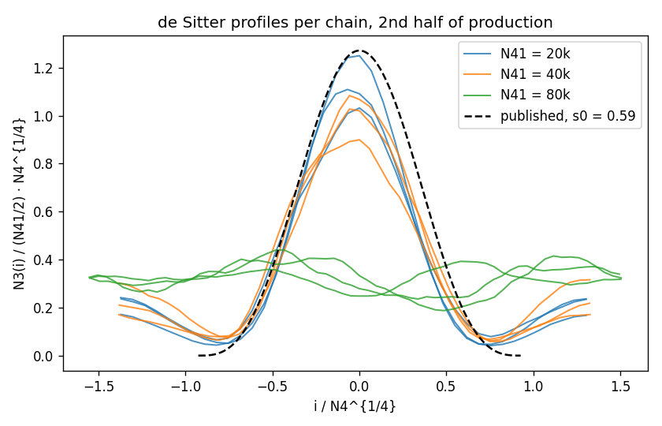
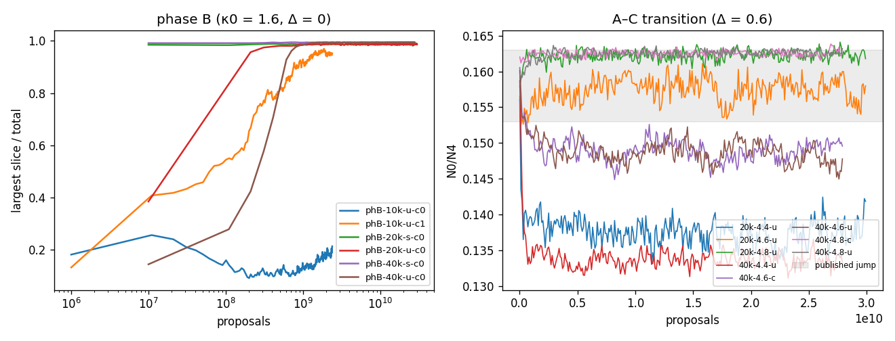
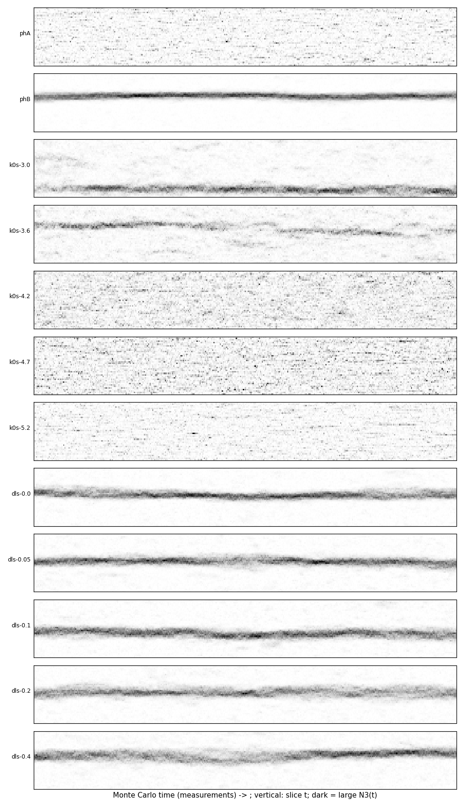
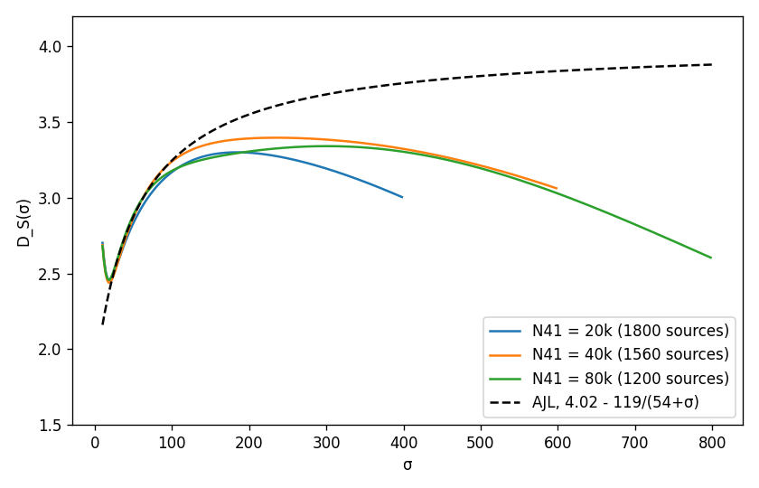
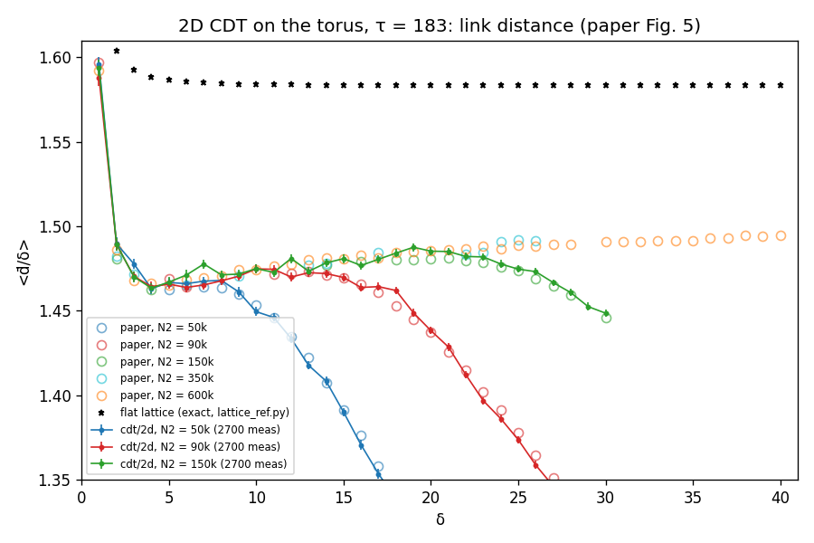
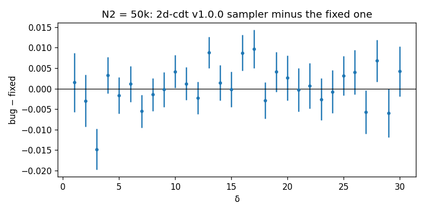

Validation against published results
Summary
The corrected code reproduces the published 4D results for the de Sitter volume profile, the phase structure, the fluctuation amplitude and the scale-dependent spectral dimension, and the published 2D curvature profile.
Validation was carried out in two rounds: first with the corrected Lisp sampler at \(N_4\) up to 22k (about 62 core-hours), then with the C++ code at 2–16 times that volume (26 chains of up to \(3.6\times10^{10}\) proposals each). The targets come from Ambjørn, Jurkiewicz, Loll and Görlich: hep-th/0505154 [R], hep-th/0505113 [S], 0807.4481 [dS] and 1203.3591 [Rev].
Overview of results
| Quantity | Published | Lisp, \(N_4 \le 22\text{k}\) | C++, \(N_4\) = 22k–182k | Verdict |
|---|---|---|---|---|
| de Sitter width \(s_0\) at (2.2, 0.6) | 0.59 | 0.551 ± 0.004 and 0.683 ± 0.014 (two chains) | 0.56 ± 0.04 at \(N_4\) = 45k; 0.59 and 0.66 at 91k | Agrees within chain-to-chain spread |
| \(\xi = N_{32}/N_{41}\) at (2.2, 0.6) | 1.225–1.275 | 1.217–1.260 | 1.264 ± 0.003 (20k), 1.277 ± 0.002 (40k) | Agrees within 1% |
| Kinetic coefficient \(k_1\) | 0.038 | 0.043 ± 0.004, 0.040 ± 0.004 | 0.0389 ± 0.0011, 0.0386 ± 0.0016 | Agrees |
| Phase A at (5.0, 0) | uncorrelated slices | slice correlation −0.03 | — | Agrees |
| Phase B at (1.6, 0) | all volume in one slice | uniform starts stayed a narrow blob; collapsed starts stayed collapsed | 98.7% (20k) and 99.4% (40k) of the volume in one slice | Agrees (C++) |
| A–C transition at \(\Delta = 0.6\) | \(\kappa_0 = 4.711\) at \(N_4\) = 120k; \(N_0/N_4\) 0.153 ↔ 0.163 | between 3.9 and 4.2 at \(N_{41}\) = 4k, 4.2 and 4.5 at 10k | between 4.6 and 4.8 at \(N_4 \approx\) 43k; \(N_0/N_4\) 0.149 ↔ 0.163 | Agrees |
| Spectral dimension \(D_S(\sigma)\) | \(4.02 - 119/(54+\sigma)\) at \(N_4\) = 181k | same finite-size trend, peak 2.84 → 3.12 | within errors (0.02) of the curve up to \(\sigma = 100\) at \(N_4\) = 91k | Agrees at small σ and in trend |
| Hausdorff dimension \(D_H\) | 3.8 ± 0.25 | qualitative collapse only | qualitative collapse only | Open |
| de Sitter blob at \(N_{41}\) = 80k | — | — | no single blob after \(3\times10^{10}\) proposals | Open |
As a consistency check, in every chain each move's acceptance rate equals that of its inverse, as stationarity requires. In one 20k chain, (2,8)/(8,2) accept 3.603%/3.602% and (4,6)/(6,4) 0.500%/0.500%.
The de Sitter phase
At \((\kappa_0, \Delta) = (2.2, 0.6)\) the simplices form an extended universe whose average volume profile is expected to follow \(\cos^3\), with width \(s_0 = 0.59\). With time rescaled by \(N_4^{1/4}\) and volume by \(N_4^{3/4}\), the main blobs of all six chains at \(N_{41}\) = 20k and 40k fall on a single curve, which agrees with the published \(\cos^3\).

Two qualifications apply. First, every chain still contains a secondary lump holding 15–25% of the volume, which decays only slowly, because the merging of blobs requires volume to flow through the thin stalk. Second, the chain-to-chain spread of \(s_0\) (±0.06) is much larger than any one chain's error, so the shape decorrelates more slowly than standard error estimates assume. Both indicate incomplete equilibration rather than disagreement.
The fluctuations around the average profile give the coefficient \(k_1\) of the minisuperspace action: \(0.0389 \pm 0.0011\) at 20k and \(0.0386 \pm 0.0016\) at 40k, against the published 0.038, independent of volume as predicted.
Phases and transitions
Phase B. In the first validation, the Lisp code at \(N_4 \approx 9\text{k}\) did not reproduce phase B from a uniform start: the universe remained a narrow blob. (Lisp runs started from a collapsed state remained collapsed, with 89–95% of the volume in one slice.) At larger volume the C++ code shows the collapse clearly. From a uniform start, the volume falls into a single slice: 98.7% at \(N_{41}\) = 20k and 99.4% at 40k. A start that is already collapsed ends in the same state at the same \(\kappa_4\).
A control run at 10k with the Lisp settings accounts for the discrepancy: one of two C++ chains collapsed after about \(10^9\) proposals, while the other remained a blob after \(2.4\times10^9\). At small volume the collapse is a slow, stochastic escape from a metastable state, which the Lisp chains had not yet made. The two codes do not differ.

The A–C transition moves to larger \(\kappa_0\) as the volume grows, approaching the published \(\kappa_0 = 4.711\) at \(N_4 = 120\text{k}\):
| \(N_{41}\) | Transition between \(\kappa_0\) = | Code |
|---|---|---|
| 4k | 3.9 and 4.2 | Lisp |
| 10k | 4.2 and 4.5 | Lisp |
| 20k | 4.4 and 4.6 | C++ |
| 40k | 4.6 and 4.8 | C++ |
On either side of the transition \(N_0/N_4\) is 0.149 (phase C) and 0.163 (phase A), matching the published jump between about 0.153 and 0.163.

Spectral dimension
The spectral dimension is measured by a random walk on the dual graph, \(D_S(\sigma)\). The published infinite-volume fit is \(4.02 - 119/(54+\sigma)\). At finite volume the curve is expected to follow it at small \(\sigma\), and then to reach a maximum and decrease once the walk becomes sensitive to the size of the universe, with the maximum moving to larger \(\sigma\) and \(D_S\) as the volume grows.

| σ | 40 | 60 | 80 | 100 | 150 | 200 | 300 | 400 |
|---|---|---|---|---|---|---|---|---|
| \(N_4\) = 45k | 2.72 | 2.93 | 3.07 | 3.17 | 3.28 | 3.30 | 3.19 | |
| \(N_4\) = 91k | 2.73 | 2.98 | 3.14 | 3.24 | 3.36 | 3.39 | 3.39 | 3.32 |
| \(N_4\) = 182k (no blob) | 2.76 | 2.98 | 3.11 | 3.18 | 3.26 | 3.31 | 3.34 | 3.30 |
| AJL fit | 2.75 | 2.98 | 3.13 | 3.25 | 3.44 | 3.55 | 3.68 | 3.76 |
Errors are about ±0.02–0.03. The 91k curve is the most reliable: it agrees with the fit within errors up to \(\sigma = 100\) (the largest difference, 0.02, is at \(\sigma = 40\)), and reaches a maximum of 3.40. The 182k geometry never formed a blob, so it is not a test of the published 181k curve.
2D curvature profile
Before the quantum Ricci curvature was ported to 4D, it was checked in 2D against Brunekreef and Loll, Quantum flatness in two-dimensional CDT quantum gravity (2110.11100). The comparison points were digitised from the paper's figures.
| Set | δ range | rms z vs paper | max |diff| |
|---|---|---|---|
| link distance, \(N_2\) = 50k | 5–17 | 1.27 | 0.0055 |
| link distance, \(N_2\) = 90k | 5–27 | 1.60 | 0.0093 |
| link distance, \(N_2\) = 150k | 4–30 | 1.44 | 0.0073 |
| dual link distance, \(N_2\) = 100k | 22–60 | 1.12 | 0.0088 |


The profiles agree with the paper for all four sets. The original 2d-cdt sampler, including its delete-move error, gives the same profile, so the published results are unaffected.
As a second check, a small 2D Euclidean dynamical triangulation simulator was written and compared with Klitgaard and Loll, 1802.10524. The fitted effective curvature radii agree within 0.7σ at \(N\) = 20k and are 1–2σ (1.5–2%) higher at 30k and 40k.
Limitations
- The de Sitter chains are not fully equilibrated: secondary lumps at 20k and 40k, and no single blob at 80k. Equilibration would probably require a starting configuration built as a blob of the expected width, for example a rescaled 40k configuration.
- \(D_H\) by best overlap runs to the edge of the scan, because the volume–volume correlator is dominated by the secondary lumps.
- The tuned \(\kappa_4\) values are pseudo-critical values at finite volume and should not be compared with large-volume literature values without a finite-size study.